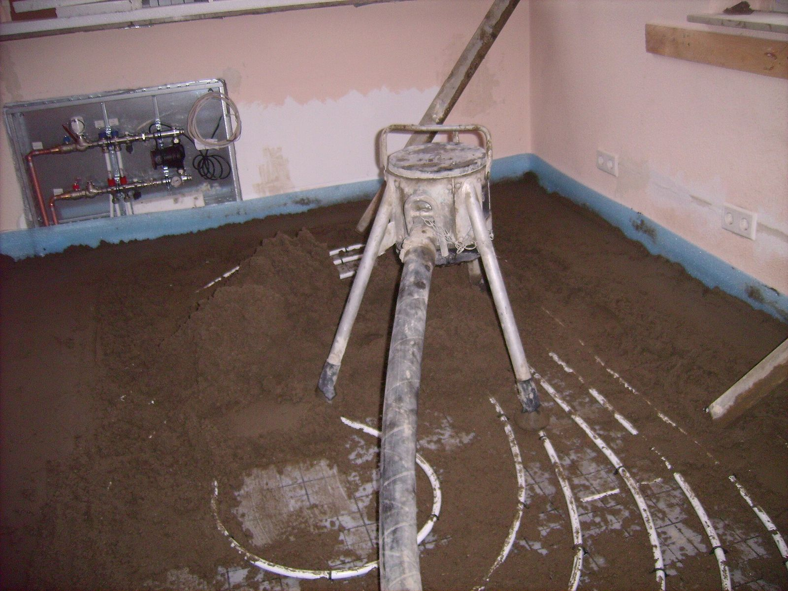

Screeding
The floor is prepared and, where required, screeded to establish the correct levels and falls.
/Trade services
Levelling floors and setting the right falls before waterproofing and tiling — the unglamorous part of the job that everything after it depends on.

Screeding creates a suitable, even surface and establishes the required levels and falls before waterproofing and tiling. Most floors aren't perfectly flat to begin with — old slabs settle, floorboards aren't consistent, and renovations often mean tying in a new floor level with an existing one. Screeding sorts that out before waterproofing or tiling starts.
In wet areas, screeding also builds in the falls — the slight slope that sends water toward the drain instead of pooling in a corner or sitting against the shower screen. Getting the falls right at this stage is important because once the tiles are installed, correcting drainage problems can mean lifting and reworking the finished surface.
/How it works
In a wet-area job, these three stages are closely connected — each one depends on the one before it being done properly.
The floor is prepared and, where required, screeded to establish the correct levels and falls.
The waterproofing system is applied to the required floor and wall areas once the substrate is ready.
Tiles are installed over the prepared and waterproofed surfaces.
Screeding is most common in bathroom and laundry renovations, where accurate floor levels and falls are important for drainage. It can also be used for general floor preparation before tiling, such as correcting an uneven existing surface or bringing a new floor level into line with an adjoining room.
Screeding can be booked as its own job — correcting an uneven floor before someone else tiles it, for instance — or as one stage in a full bathroom, laundry or kitchen renovation. Either way, it's worth getting right before anything goes down on top of it.
Get in touch with Top Tier Tiling Group to talk through your job and request a quote.

/Questions & answers
Screeding levels the floor and, in wet areas, builds in the correct falls to the drain, giving waterproofing and tiling a stable, even surface to work with.
Not always. Screeding is used when the floor needs levelling, reshaping or falls corrected. Depending on the existing substrate and the requirements of the job, other preparation methods may be suitable.